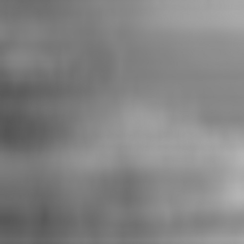
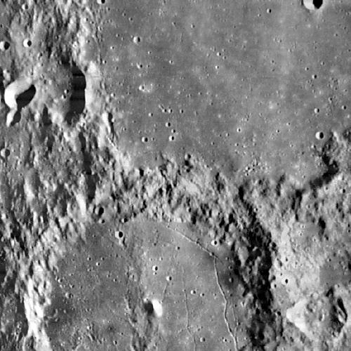
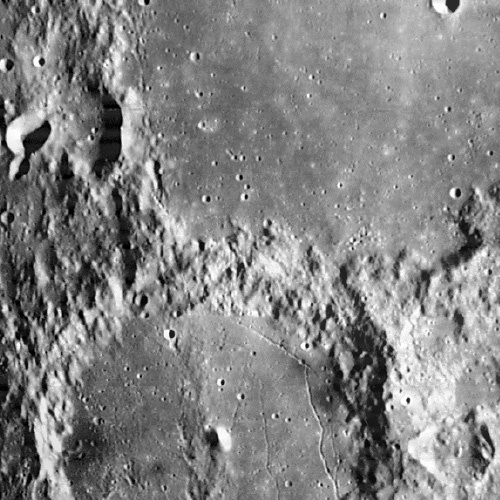

Removing Striping Noise from Image Data ¶
Removing Striping Noise ¶
Summary of the Method ¶
Destriping is a common procedure used on images to remove distracting horizontal or vertical noise in an image. This type of destriping involves running two filters on the original image creating two new images, a low pass filtered image and a high pass filtered image, and combining the results.
Striping Noise Example
This Lunar Orbiter image contains horizontal striping noise due to the scanning, output, and transmission phases of its collection.
{kind=link}
Concepts ¶
If both a low pass and a high pass filter of the same size are run on an image and then added together, the result will be the original image. If the filter sizes are not the same the result will not be exactly the same as the original. The goal in choosing sizes for the two filters is to create an output for each without the unwanted striping. If this is accomplished, when the filter outputs are added together the striping will have been removed or subdued. If the sizes of the two filters differ too much, artifacts may be introduced into the result. This type of procedure works very well on horizontal and vertical striping, but is not recommended for diagonal striping.
Related ISIS3 Applications ¶
See the following ISIS3 documentation for information about the applications you will need to use to perform this procedure:
- lowpass - low pass filter application
- highpass - high pass filter application
- algebra - used to add the results of the low and high pass filters
Some general tips for choosing the filter sizes ¶
-
The boxcar shapes for both the low pass and high pass filters should be similar in shape to the striping. This is not a firm rule. The filter sizes can be opposite (i.e., long and short -vs- narrow and tall).
-
The size of the low pass filter should be large enough to completely encompass the problem, plus enough extra pixels to keep the average of any boxcar from being overly effected by the striping. A good rule of thumb to start with is a low pass boxcar size twice the size of the striping.
-
The size of the high pass filter should be small enough to completely fit inside the problem, minus enough pixels to keep the average of any boxcar from being overly effected by the striping. A good rule here is to make the high pass filter boxcar size less than one half the size of the striping.

Striping Close-up
Enlarged view to show the height of the striping. The blocks in the scale bar along the left side of the image measure a 3 pixel by 3 pixel area. The stripes are roughly 7 to 10 pixels high.
Destriping Exercise ¶
Example Images and Striping ¶
The image used in this example is a sub-area of a Lunar Orbiter film strip. The scanning, output, and transmission phases introduced some striping noise.
Striping Noise Example
This Lunar Orbiter image contains horizontal striping noise due to the scanning, output, and transmission phases of its collection

Low pass Filter Results
This image is the result of running a low pass filter on the original image, with a boxcar shape that is very wide but not very tall
{kind=link}

High pass Filter Results
This image is the result of running a high pass filter on the original image, with a boxcar shape that is very wide and very short
{kind=link}

Image Sum
This image is the result of the low pass and high pass filtered images added together
{kind=link}
Challenge! ¶
Do you think you can get results as good as the ones shown above? Try your hand at destriping the Lunar Orbiter image!
Interactive Destripe Demonstration ¶
Destriping: Try it in ISIS3! ¶
Think you're ready to give the destriping procedure a whirl? Download this portion of a Lunar Orbiter subframe below to the computer where you have ISIS3 installed. The mosaic was created from scanned photographic film strips collected by the Lunar Orbiter IV mission. The result of the assembly of the strips into the mosaic is a repetetive striping through the mosaic, which can be removed using the destriping procedure. Try using the procedure you just learned to radiometrically correct the mosaic by removing the striping that occurs in the mosaic.
The mosaic is an ISIS3 cube compressed in a GZIP archive file. Use gunzip to uncompress the cube. (Data source:
Lunar Orbiter Digitization Project
)
Download the Sample Data Here: LO_4090_h1.cub.gz